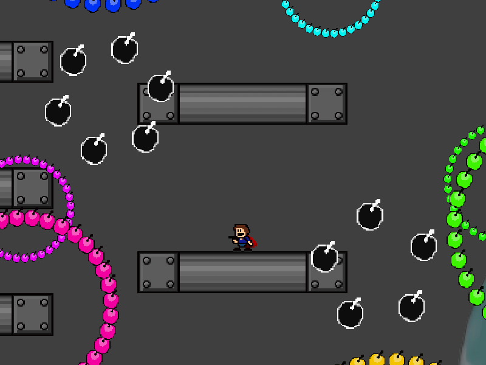
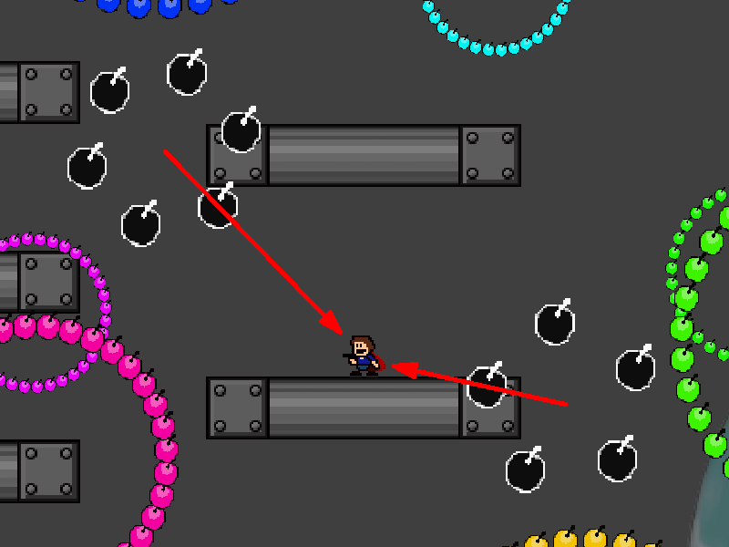
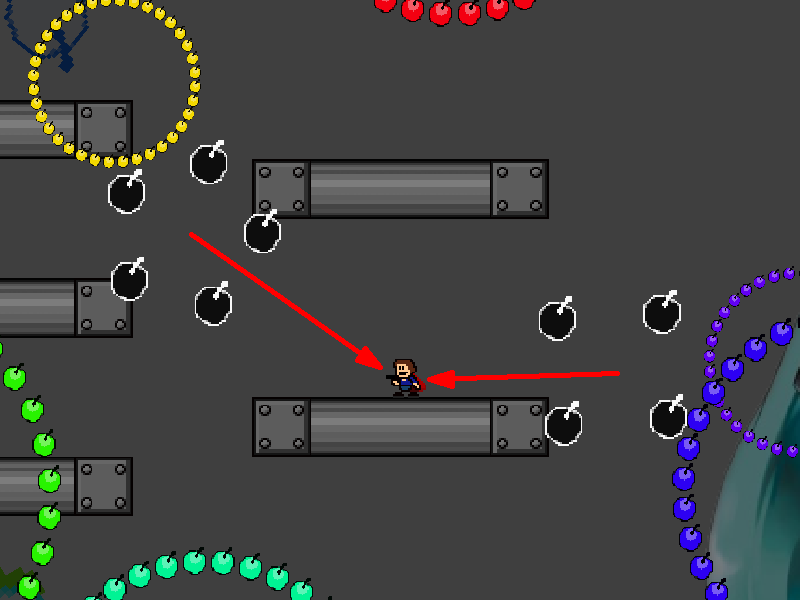
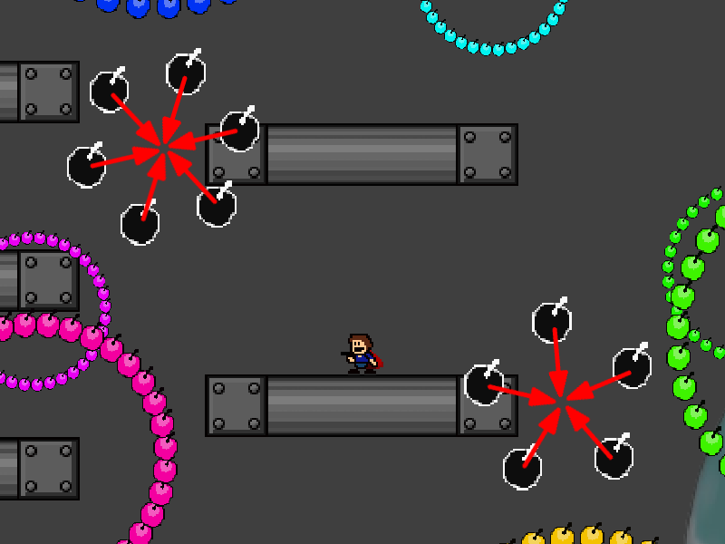
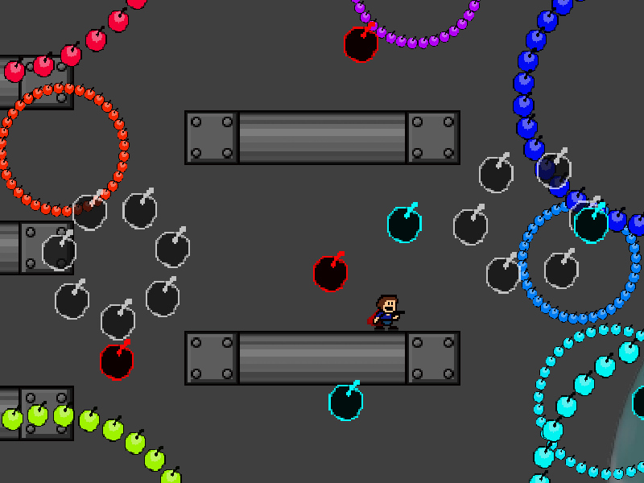

| creator | segment | label | jump |
|---|---|---|---|
| NN | 1:23.20~1:26.60 | R | double |
偶数と奇数を題材とした反復型の弾幕です。
画面の左半分と右半分にそれぞれ周期的に生成される、4~7個の弾により構成される円形弾幕に関して、これらはいずれも各時刻においてその角度がプレイヤーの位置を基準として決定されます。
角度について、中心から見たプレイヤーの角度を基準とする状態を自機狙い状態（fig.6-6.1.a）、プレイヤーに対して最も開いている状態を自機外し状態（fig.6-6.1.b）としたとき、これらは常にそのどちらかの状態にあります。


生成から40stepが経過した時点で、これらの円形弾幕はそれぞれ中心に対して折り返すように半径が変化し始めます（fig.6-6.2.a）。
折り返した後の形状に関して、必ず一方の円形弾幕が自機狙い状態、もう一方の円形弾幕が自機外し状態にあり、かつその半径が折り返し開始時のプレイヤーの位置に重なるように決定されます（fig.6-6.2.b）。
したがって、折り返し前の円形弾幕の形状から折り返し後の円の状態を判断し、その状態が自機狙い状態であるものから離れる（自機外し状態であるものに近づく）必要があります。
任意の場合において左右移動のみで回避可能であることを利用し、また回避後に毎回画面中央部に立ち戻ることを意識することによって攻略がしやすくなるかもしれません。

